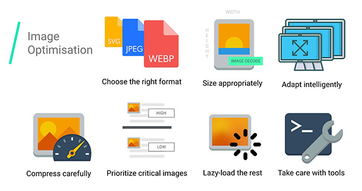
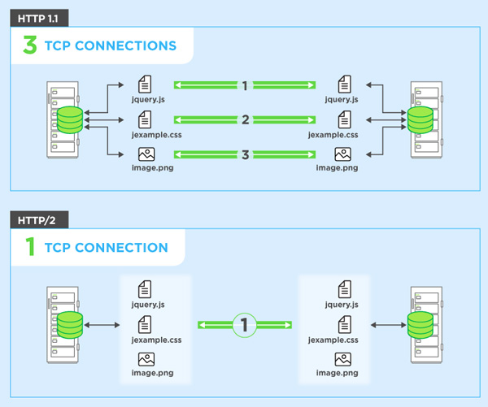
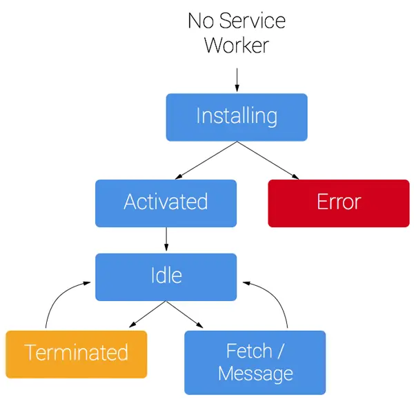

A webpage has its value and reason for existing on the web. So it is very important for it to serve its value without doing anything. Performance is something that makes it happen.
Let’s discuss how...
“Improving performance is a journey. Small changes can often lead to big gains.”
Addy Osmani
You can’t make your website fast if you can’t optimize Images on your site. Images are most amount of your web page. According to the HTTP Archive, 60% of the data transferred to fetch a web page is images composed of JPEGs, PNGs and GIFs. As of July 2017, images accounted for 1.7MB of the content loaded for the 3.0MB average site.
We optimize images on web with different approaches:
We can reduce our CSS and Javascript file size 40-60% just by minifying same code. Generally we code that’s easy to use and implement for others, for that we typically create structure code and use comments for others. But machine reads our code top to bottom, it does need any spaces and comments. So we can minify our CSS and Javascript file before we ship our code.
To minify code we can remove extra spaces and comments also we can use some online tools for minifying that code. This minify file provides the same functionality in small file size. Also, be careful from using the core file of any third party library and framework you are importing in your code. They also provide minified versions of their files for production deployments, usually denoted with a min.js name extension.
Your webpage contain some text, graphics, style and script, but do you know each of them is coming from the server with an HTTP request. And every HTTP request takes some time to provide the resources that require. We can minimize that time to reduce the number of HTTP request a page contain.
Here are some ways to reduce the number of components include:
HTTP/2 is a major revision of the HTTP network protocol used by the World Wide Web. It makes our applications faster, simpler, and more robust, it also opens up a number of entirely new opportunities to optimize our applications and improve performance!
HTTP/2
The Critical Rendering Path is the sequence of steps the browser goes through to convert the HTML, CSS, and JavaScript into pixels on the screen. Optimizing the critical render path improves render performance.The critical rendering path includes the Document Object Model (DOM), CSS Object Model (CSSOM), render tree and layout.
Improve page load speed by prioritizing which resources get loaded, controlling the order in which they area loaded, and reducing the file sizes of those resources. Performance tips include:
Find unused CSS and JS code and reduce the size of your page. You can reduce the size of your pages by only shipping the code that you need. Every time we import a library and framework but we never use all of it. So for that Developers Tool in Google Chrome, the Coverage tab tells you how much code was used.
All modern browsers support and automatically negotiate gzip compression for all HTTP requests. Enabling gzip compression can reduce the size of the transferred response by up to 90%, which can significantly reduce the amount of time to download the resource, reduce data usage for the client, and improve the time to first render of your pages.
Enable and test gzip compression support on your web server.
A service worker is a script that your browser runs in the background, separate from a web page, opening the door to features that don't need a web page or user interaction. Today, they already include features like push notifications and background sync.
In the future, service workers might support other things like periodic sync or geofencing. The core feature discussed in this tutorial is the ability to intercept and handle network requests, including programmatically managing a cache of responses.
Priorities become important when investigating loading performance in your site. Beyond the usual techniques of measuring and analyzing the critical rendering path, it’s useful to know brousers priority for each resource.
Preload : rel=“preload” is a declarative fetch, allowing you to force the browser to make a request for a resource without blocking the document’s onload event.
Prefetch : rel=“prefetch is a low priority resource hint that allows the browser to fetch resources in the background (idle time) that might be needed later, and store them in the browser’s cache.
Preconnect : rel=“preconnect” allows the browser to setup early connections before an HTTP request is actually sent to the server. This includes DNS lookups, TLS negotiations, TCP handshakes. This in turn eliminates roundtrip latency and saves time for users.
Users of today’s web expect that the pages they visit will be interactive and smooth and that’s where you need to increasingly focus your time and effort. Pages should not only load quickly, but also run well; scrolling should be stick-to-finger fast, and animations and interactions should be silky smooth.
Performance is the art of avoiding work, and making any work you do as efficient as possible. In many cases it's about working with the browser, not against it.
It’s worth bearing in mind that the work listed above in the pipeline differ in terms of computational cost; some tasks are more expensive than others!